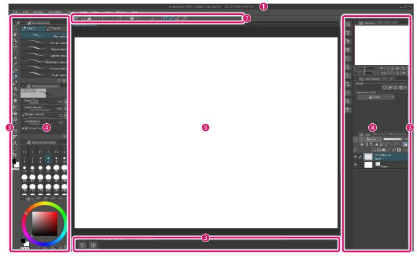
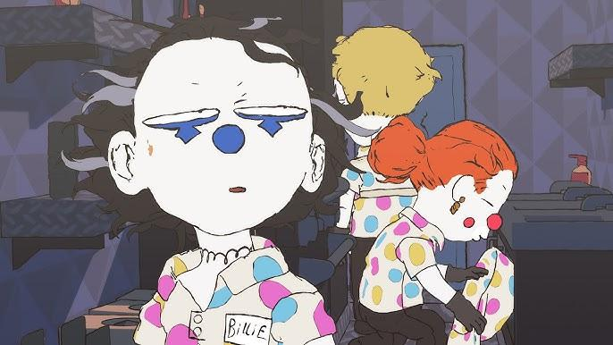
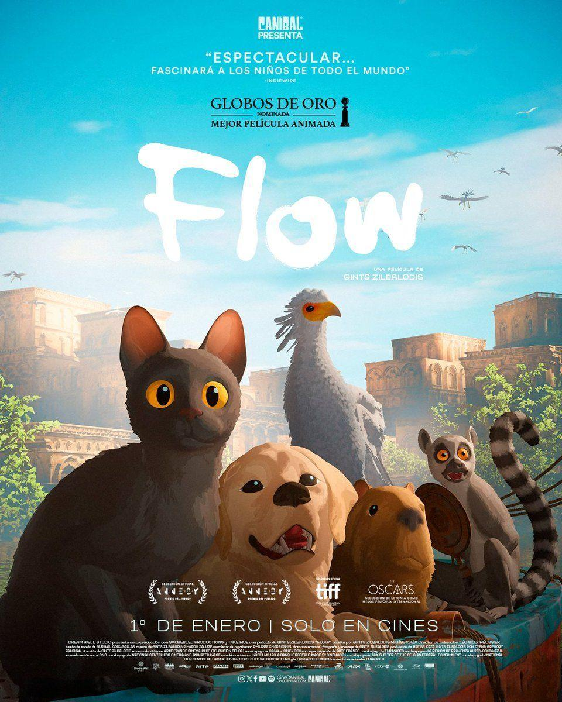

9/26/2025
AI as a tool
I've been drawing for a relatively long time. Not as much time as artists could have, but I would consider myself semi-professional as I was previously an art student studying animation. When it comes to art technology (yes, it's a thing), I keep informed and make sure I know how things work as if I ever wanted to use certain tools, I would have a basic infrastructure to work off of. This is as unbiased as I can get when talking about Artificial Intelligence, or what I refer to as Artificial Generation, which is its rating of usefulness to me as an artist's tool. I'm going to avoid saying the negative repercussions of using AI, in a moral and physical sense.
I think one of the biggest sayings I hear from people is, “if it wasn't immoral or environmentally damaging, I'd use it.” Now don't get me wrong– I have used a professional art program to make all of my art on for the past five years. I try and get my hands on all the latest technology when it comes to the creation of any sort of art; my latest was the endeavor of looking into whether or not my partner's 3D printer can print foam. I think breaking down what these two technologies do for me is the easiest way to compare and contrast the possibilities of using generative programs when it comes to being used as a tool.
ClipStudioPaint (EX, non-subscriber version) is a comic and animation software for digital art that is quickly becoming standard for its overall quality and ease of use, as well as its growing arsenal of extreme technology when subscribed to its monthly updates. This is an example of the few layouts you can choose:
I think one of the biggest sayings I hear from people is, “if it wasn't immoral or environmentally damaging, I'd use it.” Now don't get me wrong– I have used a professional art program to make all of my art on for the past five years. I try and get my hands on all the latest technology when it comes to the creation of any sort of art; my latest was the endeavor of looking into whether or not my partner's 3D printer can print foam. I think breaking down what these two technologies do for me is the easiest way to compare and contrast the possibilities of using generative programs when it comes to being used as a tool.
ClipStudioPaint (EX, non-subscriber version) is a comic and animation software for digital art that is quickly becoming standard for its overall quality and ease of use, as well as its growing arsenal of extreme technology when subscribed to its monthly updates. This is an example of the few layouts you can choose:

They vary from project to project; one of the more impressive layouts is its graphic novel layout. It creates a large project folder within the program that holds as many pages as you need which can then be exported into multiple different comic-publisher layouts, such as Webtoons or Tapas. It has brushes, which can either be made by paid ClipStudio artists or by artists that use ClipStudio, which are downloadable on a launching program for the art program itself. Built-in access to millions of tools made by people who use the program every day is an insanely helpful addition, and makes a basic purchase of the program entirely worth it.
Let's discuss another art tool that has been around since 1998; Blender. Once a basic, free 3D modeling program with a borderline painful learning curve has developed into the mad-scientist powerhouse of 3D and 2D animation, with an even more painful learning curve, and still completely free. More recently Blender has been making advancements in their GreasePencil technology, which combines 2D animation with a 3D space. The best part about the tool is that it's a completely limitless tool; what I mean is that you can really use it in any way you see fit. Worthikids is an artist who makes their own animated series (multiple now) on YouTube, creating it with Blender and funding it through Patreon. A screenshot from one of their projects demonstrates the sheer potential that GreasePencil contains:

These characters are actually 3D models moving in a 2D space, with 2D effects drawn overtop. It's a mix of media, and I'd argue the next natural step when it comes to animated technology. Another project, though not specifically made with GreasePencil but made in Blender, is the movie Flow, which won the Oscars for best animated film (and the first movie that won without any dialogue!). It was written and animated primarily by the director, and the credits have an astonishing number of 20 unique names (though it is entertaining to see how many times Zilbalodis, the director and lead animator names, pops up for accreditation).

Now, let's break down generative programs in the same ways I've broken down the two art programs. Generative programs are primarily pattern algorithms that utilize said patterns to predict client satisfaction. It derives either a pattern of words/phrases or a pattern of coloring per pixel to determine what a user is looking for based on the analysis of what the user inputted into the program. At an initial pass, we can automatically eliminate its usage for some areas: character design, storyboarding, and consistent character recurrences. The reasoning for this is that fundamentally, generative programs lean more towards either extreme detailing or inconsistent major detailing. Generative programs aren't made with basic layout rules in mind, which both refers to character design and background work. If I had more time, I'd explain it in more detail, as character design uses interesting methods of language in order to convey correct information to audiences.
There are really only two utilizations of generative programs that I can think of that serve as a complete possibility as a tool: repetitive detailing for animation and background work. The repetitive detailing would need a closed generative program to actually work, like the programming used to aid animators to speed up work for the movie Into the Spiderverse. The background work would also ideally require a closed program, and would have to be used in places where background details weren't necessary (which they almost always are for a good story).
The way that Generative programs are being used now are more so the equivalent of salting good soil so farmers can't use it anymore. These programs, rather than being tools that artists use to enhance their work, require the artist to use them in order for them to become acceptable work. This essentially changes the artist's job from, well, an artist, to a worse editor. The same logic applies with writers in a more nuanced way, of which I may choose to write about at a future time.
Parataxis
As I saw him, he saw me. And I think in that time, the course of everything everywhere began to shift. The yellow of his eyes, the painful bright red of his hair, his cold touch. I felt as though my entire being was being torn in two; brain splitting, his heart pumping, I took my last breath.